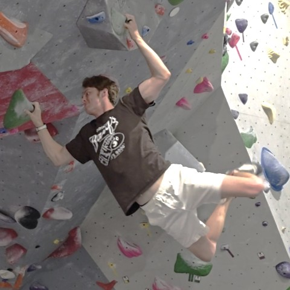

Introduction
-
Personal Background: Born and raised in Charlotte, NC. I like rock climbing and golf. I look forward to graduating after this semester and joining the workforce.
-
Professional Background: I worked for a pizza restaurant as a delivery driver for almost 8 years and just recently quit, so that I can focus on finishing my last semester here at CPCC.
-
Academic Background: Full Stack Programming Major, in my last semester
-
Background in this subject: My background in this subject was fairly limited coming into the program. I completed a UX/UI certificate through Google on my own time and that is what led me to web development. That certificate did not include any coding but covered brainstorming, prototyping, user research, and good design practices.
-
Primary Computer Platform: Lenovo Yoga 7, Windows 11, in my room
-
Courses I'm Taking and Why:
- CSC221 - Advanced Python Programming: This course is part of my degree
- CTS240 - Project Management: I would like to go into project management in the future
- WEB115 - Web Markup and Scripting: Learning basic markup and scripting skills
- WEB140 - Web Development Tools: Learn about key web development tools needed to be successful
- WEB215 - Advanced Markup and Scripting: Learning more advanced markup and scripting skills
- WEB250 - Database Driven Websites: Learn about PHP and database-website interactions
-
Funny/Interesting Item to Remember Me By: I have partially torn pulleys in two of my fingers from rock climbing, not fun!